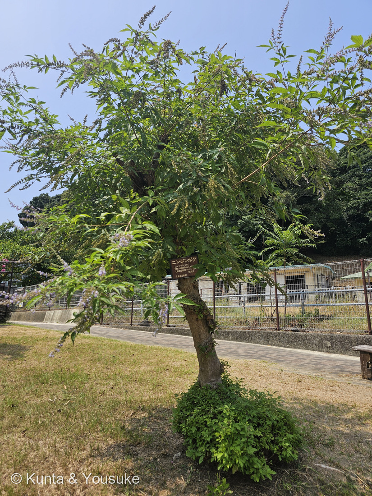
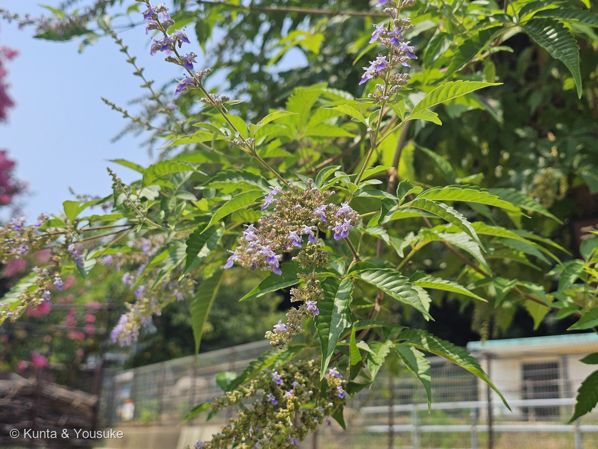
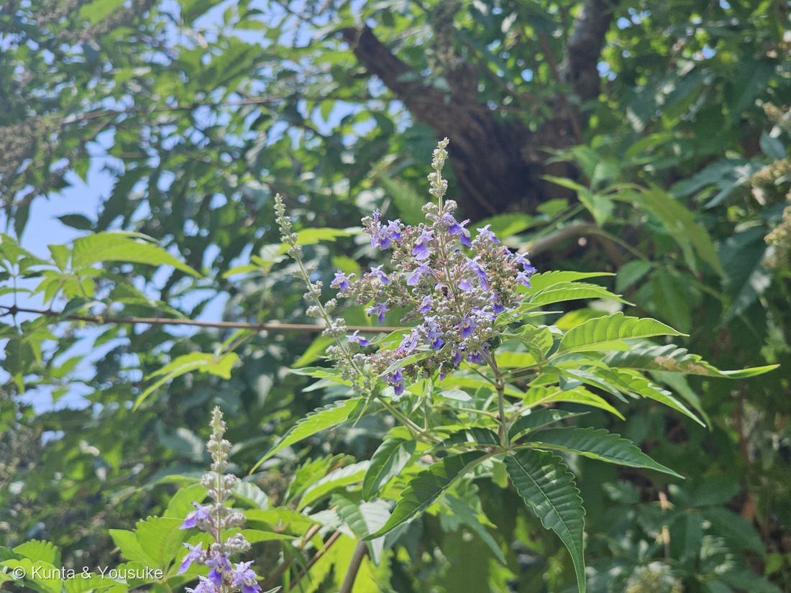
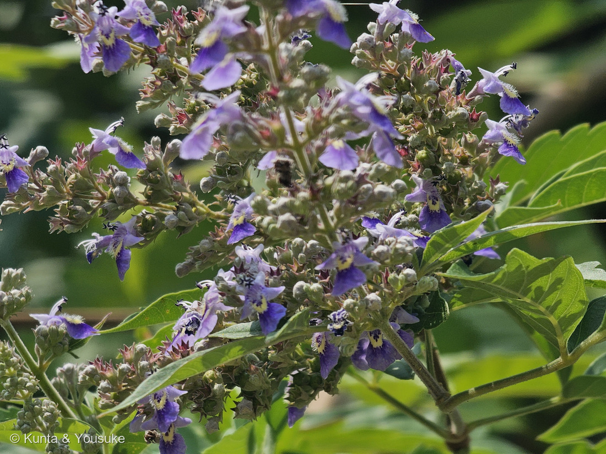
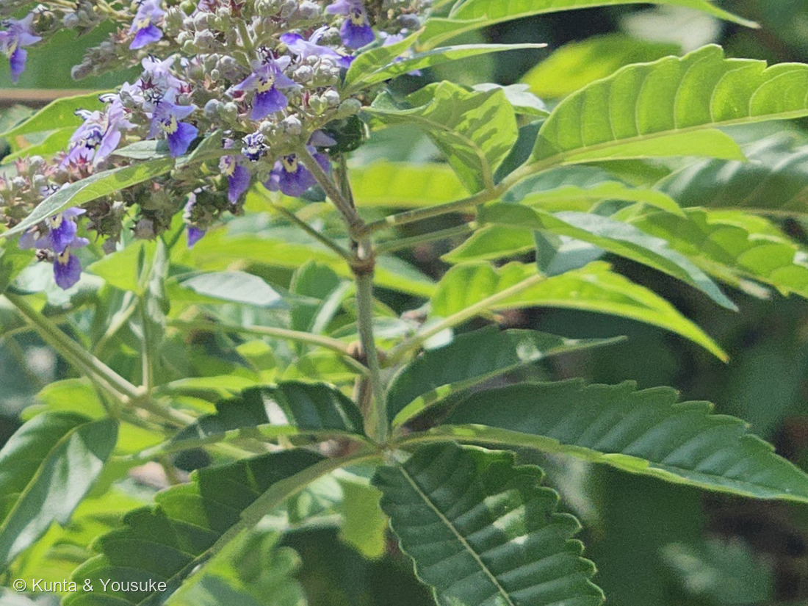

地図を読み込んでいるよ…
🔍 写真も地図も、押しているあいだ拡大して見られるよ（スマホは指を置いてすこし待ってね）。
🌍 の地図＝この子がもともと自生している場所を緑に。中国。江戸時代の享保年間（1716〜1736年）に薬用として日本へ渡ってきた木で、日本に自生はしていないよ。
⭐中国だけを塗ったよ＝庭木図鑑 植木ペディアは「中国を原産とする落葉低木で、享保年間（1716〜1736）に薬用として日本へ渡来」とし、東京生薬協会も熊本大学薬学部も「中国原産」でそろっている。⭐⭐だからこの子は、日本には自生していない＝ぼくらが会ったのは九十九島動植物園 森きららの、シマウマの放飼場のとなりの芝生。⚠⚠ただし、この緑には注意書きがいる＝GBIF はこの子を Vitex negundo と同じものとしてあつかっていて、そちらの分布は東アフリカから南アジア・東南アジア・東アジアまで、ずっと広い＝⭐つまり「どこまでを同じ種と呼ぶか」で、地図の緑の広さが変わってしまう子なんだ（⭐253 ビロウと同じ事情だよ）。⭐⭐⭐そして、この緑とこの子の名前はつながっている＝和名の「ニンジン」は、ウコギ科のオタネニンジン（高麗人参）の葉に似ているから＝そのオタネニンジンも、中国東北部から朝鮮半島にかけての子＝⭐同じあたりの植物どうしを、日本の人が見くらべて名づけたんだね。⭐⭐同じハマゴウ属の071 ハマゴウとくらべてみて＝あちらは日本の海岸に自生する在来の子＝⭐同じ属でも、片方は海をわたって来た木、片方はもとからここにいる木だよ。⭐⭐⭐おまけのセイヨウニンジンボクは、地中海から中央アジアあたりの子＝この緑のずっと西＝⚠それでも同じハマゴウ属＝⭐ハマゴウ属は、世界の暖かいところに250種以上が散らばった大きな属なんだ。
⚠ 地図は国（日本と中国だけ県・省）までしか塗れないから、ほんとうの分布より広く見えていることがあるよ。地図はだいたいの場所。正確なところは、上の文を見てね。
ニンジンボク（人参木）
Vitex cannabifolia Siebold et Zucc.（⚠いまの扱いは割れていて、GBIF は V. negundo のシノニムとする）
別名 生薬名 ボケイシ（牡荊子）＝果実／英名 hemp-leaf chastetree（アサの葉のセイヨウニンジンボク）
シソ科 · Lamiaceae（ハマゴウ属 Vitex）── ⭐図鑑で15人目のシソ科／⭐⭐ハマゴウ属は2人目＝071 ハマゴウと同じ属だよ／⚠園の樹名板は旧い「クマツヅラ科」＝APG では071と同じくシソ科に移った
燻太さんの言葉「シソ科っぽい花を咲かせているけど、名前はセリ科のニンジンからもらっているみたい。根っこがニンジンみたくなるのかな？それとも樹形がニンジンみたいになるからかな?」── ⭐⭐「シソ科っぽい」はずばり当たり。でも「ニンジン」のほうは、思いがけない答えだったよ
⭐⭐⭐⭐⭐ 名前と学名の由来 ── 答えは「葉」、しかもニンジンちがいだった
- ⭐⭐⭐燻太さんの問いの答えは、根っこでも樹形でもなく「葉」だよ。──⚠そして、もうひとつ大事なことがあるんだ。
- ⚠⚠⚠名前をもらった相手は、セリ科のニンジンじゃなかった。──この子が似ていると言われているのは、ウコギ科のオタネニンジン（薬用人参・高麗人参・Panax ginseng）の葉。
- ⭐東京生薬協会は「この葉姿が、ウコギ科のオタネニンジン（高麗人参）の葉にやや似ている」と書き、熊本大学薬学部の薬草データベースも「葉の形がオタネニンジン（薬用人参）に似ることからその名がある」と書いている。⭐ふたつの出典が、同じことを言っていたよ。
- ⭐そして「ボク（木）」は、草ではなく木だから。──オタネニンジンは草、こちらは高さ2〜4mの木。だから「人参木」なんだ。
- ⭐⭐⭐⭐なぜセリ科のニンジンではないと言えるか——⭐それは葉の形で決まるよ。写真⑤を見てね。
- この子の葉＝⭐5枚の小葉が1点から放射状にひらく＝これを掌状複葉（しょうじょうふくよう）という＝手のひらを広げた形。
- オタネニンジン（ウコギ科）の葉＝⭐やっぱり掌状複葉。／セリ科のニンジン（Daucus carota）の葉＝⚠こちらは羽根のように細かく何回も裂ける葉＝にんじんの葉っぱを思い出してみて。ふわふわの、コスモスみたいな細い葉でしょう。
- ⭐⭐⭐つまり形がぜんぜんちがう。──放射状にひらく手のひらか、細かく裂けた羽根か。⭐この子の葉は、はっきり前者だよ。
⭐⭐⭐⭐⭐ おなじ1枚の葉を、日本の人は「ニンジン」、シーボルトたちは「アサ」に見立てた
- ⭐学名の種小名は cannabifolia＝Cannabis（アサ）＋ folia（葉）＝⭐⭐「アサの葉のような」。
- ⭐名づけたのはシーボルトとツッカリーニ（学名のうしろの「Siebold et Zucc.」）＝日本の植物をヨーロッパへ伝えた、あの2人だよ。
- ⭐⭐熊本大学の記載も「掌状複葉で、アサの葉に似る」と書いている＝アサの葉も、掌状複葉で縁がギザギザなんだ。
- ⭐⭐⭐⭐⭐つまり──まったく同じ1枚の葉を、日本の人は「ニンジンの葉だ」と見て、シーボルトたちは「アサの葉だ」と見た。──⭐どちらもまちがっていない。⭐その人がいちばん身近に見ていた「掌状複葉」が、そのまま名前になっただけ。
- ⭐⭐306で書いた「学名はどこの誰かの記録、和名は何に見えたかの記録」の、さらに一歩さきの形だね＝⭐ここでは和名も学名も「何に見えたか」の記録で、しかも見た人がちがった。
- ⭐⭐属名 Vitex のほうは、図鑑の中にもう答えがあった。──071 ハマゴウのページに「Vitex はラテン語の viere（編む・しばる）に由来するといわれる＝枝がしなやかで、かごを編むのに使えたから」と書いてあったんだ。⚠同じ属の子が図鑑にいるなら、そのページがいちばん速い出典だよ（257のときに決めたやりかた）。
⭐⭐⭐ この植物のこと ── 薬のために、海をわたってきた木
- ⭐中国原産の落葉低木で、日本へは享保年間（1716〜1736年）に薬用として渡来した（植木ペディア）＝⭐300年ちかくまえのことだよ。
- ⭐樹高2〜4m。花期は7〜8月で、葉のつけ根から10〜20cmの円錐形の花穂がのび、径8mmほどの淡紫の唇形花が階段状に咲きあがる（同）＝⭐写真②③の、まっすぐ上へ立つ花穂がそれ。
- ⭐果実は球形かゆがんだ卵形で直径3mmほど、熟すと黒褐色（同）＝⭐⭐これを乾かしたものが生薬のボケイシ（牡荊子）で、園の樹名板にも「【用部】果実＝ボケイシ 牡荊子／【用途】感冒」と書いてあった。
- ⭐東京生薬協会も「これをボケイシ（牡荊子）と称し、本草書には感冒等に用いた記録があります」と書いている。⚠この図鑑では、使われてきたことまでを書いて、使いかたは書かないことにしているよ（220で決めたルール）。
- ⭐⭐写真①の株もとを見てね。──たくさんの若い枝が、まとまってふき出している。⭐幹の上のほうにも切られた跡があるので、強めに剪定されて、そこから吹きなおしているみたい。⏳そのあとどうなるかは、宿題にしておいたよ。
⭐⭐⭐⭐ 同定について ── 燻太さんの「シソ科っぽい」は、ずばり当たり
- ⭐⭐⭐⭐⭐園の樹名板があるので確定＝「ニンジンボク／（クマツヅラ科）／Vitex cannabifolia S. et Z.」（九十九島動植物園 森きらら）。
- ⭐⭐「っぽい」どころか、いまはシソ科そのものだよ。──⚠樹名板の「クマツヅラ科」は作られたころの科名で、APG の分類ではシソ科に移った。⭐同じことが071 ハマゴウにも起きているよ。
- ⭐⭐⭐そして花のつくりが、ちゃんとシソ科だった（写真④）：萼は鐘形で5歯（星形にとがったガクがそれ）／花冠は筒から5つに裂けて、下側の1枚だけがとても大きい（あの黄色い斑のある大きな下唇が、虫のとまり場になる）／⭐⭐雄しべは4本で、長いのが2本・短いのが2本の「2強雄しべ」（花からぴょんとつき出しているのがそれ）／花柱は1本で、先が2つに裂ける。
- ⭐046 サルビアや175 シソ、270 ウツボグサとならべてみて。⭐⭐「下唇が大きくて、雄しべが4本」は、シソ科みんなの持ちものだよ。
- ⭐葉も合っている＝掌状複葉で小葉3〜5枚、広披針形で粗い鋸歯、そして対生（写真⑤＝熊本大学薬学部の記載どおり）。
- ⚠⚠ただし、学名のあつかいは3つに割れている。──樹名板＝独立した種（V. cannabifolia）／熊本大学薬学部＝変種（V. negundo var. cannabifolia）／GBIF＝本家と同じもの（V. negundo のシノニム）＝⭐⭐「独立した種 → 変種 → 本家と同じもの」と降りていく順にならべると、割れが歴史として読めるよ（253 ビロウとまったく同じ形だね）。
- ⚠おまけのセイヨウニンジンボク（V. agnus-castus）とは、花の形・色の濃さ・小葉の数がちがう（植木ペディア）＝⭐いちばん分かりやすいのは小葉の縁＝この子は粗いギザギザ、あちらはほぼ全縁だよ。
⭐⭐⭐⭐⭐ 図鑑には、もう一人「木になったニンジン」がいた
- ⚠⚠登録するまえに図鑑の中を grep したら、思いがけない子が出てきた。
- ⭐⭐234 カクレミノのページに、ぼくはもう書いていたんだ――「属名 Dendropanax は『dendron（木）＋ Panax（チョウセンニンジン属）』＝『木になったチョウセンニンジン』。ウコギ科は、あの薬用人参と同じ科だからね」。
- ⭐⭐⭐⭐⭐つまりこの図鑑には、「木になったニンジン」という名前の子が2人いる。──でも、中身がまるでちがう。
- 234 カクレミノ＝ニンジンの名は学名のほうにあり、名づけたのはヨーロッパの植物学者。科はウコギ科＝⭐オタネニンジンと同じ科＝ほんとうの親戚。
- この子（309 ニンジンボク）＝ニンジンの名は和名のほうにあり、名づけたのは日本の人。科はシソ科＝⚠オタネニンジンとはまったく別の科＝他人の空似。
- ⭐⭐⭐同じ「木になった人参」でも、片方は血がつながっていて、片方はつながっていない。──⭐しかも似ていると言われた理由は、どちらも掌状複葉という同じ形なんだ。⭐これは「🧬 収れん・他人の空似」の話でもあるね。
出典：園の樹名板（九十九島動植物園 森きらら「ニンジンボク／（クマツヅラ科）／Vitex cannabifolia S. et Z.／【用部】果実＝ボケイシ 牡荊子／【用途】感冒」）。和名の由来（葉の形がウコギ科のオタネニンジンに似ることから）は公益社団法人 東京生薬協会「ニンジンボク」と、熊本大学薬学部薬用植物園 薬草データベース「ニンジンボク」。葉・花・果実・樹高・渡来の年代は庭木図鑑 植木ペディア「ニンジンボク」と、上の熊本大学のデータベース（Vitex negundo L. var. cannabifolia）。ハマゴウ属の花のつくり（萼は鐘形5歯／花冠は5裂して下側の裂片が大きい／雄しべ4本の2強雄しべ／花柱は2裂）は日本語版Wikipedia「ハマゴウ属」。学名のいまの扱い（V. cannabifolia はシノニムで、有効名は V. negundo）は GBIF backbone。属名 Vitex の由来は071 ハマゴウのページに書いたとおり。⚠「セリ科のニンジンではなくウコギ科のオタネニンジンだ」という説明は出典どおりだけれど、なぜセリ科ではないと言えるかを「葉の形（掌状複葉か、細かく裂ける羽状か）」で説明したのは、ぼくの整理だよ。⚠「同じ葉を、日本の人はニンジンに、シーボルトたちはアサに見立てた」というならべ方も、ぼくの整理＝⭐それぞれの由来には出典があるけれど、2つをならべたのはぼくだよ。⚠写真②の左のピンクの花は、ぼけていて種を決められなかった＝⭐決めずにそのままにしてある。⭐撮影時刻は燻太さんの原本のEXIFから読んだ（⚠この日の写真はGPSが空。公開画像はEXIFを落としてある）。